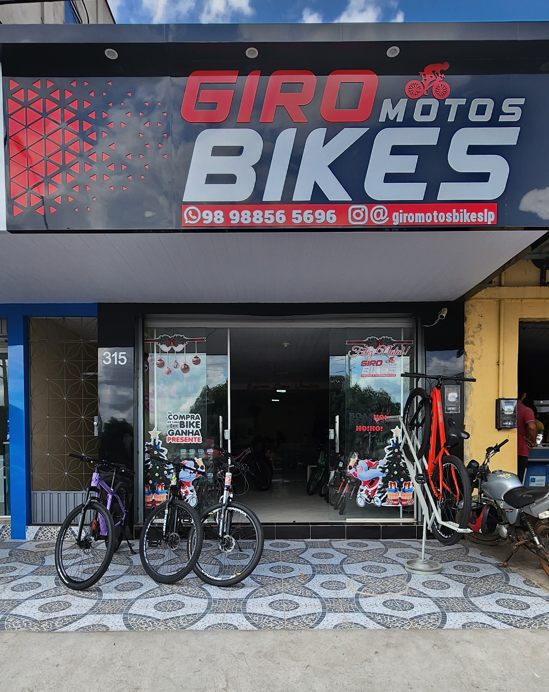

Bicicletas
Bikes para adultos e crianças, para diferentes momentos e perfis de quem quer pedalar.
Giro Motos Bikes
Bike, roupa, peça, acessório ou manutenção: a Giro Motos Bikes reúne soluções para diferentes momentos de quem vive o ciclismo, do primeiro pedal à rotina de quem já está sempre sobre duas rodas.


Loja física & atendimento
Na Giro Motos Bikes você encontra bicicletas para adultos e crianças, roupas de ciclismo, peças e acessórios para equipar a bike e o ciclista.
A loja também conta com oficina mecânica para manutenção e cuidados com a bicicleta. Seja para começar a pedalar, trocar um equipamento, preparar a bike ou resolver uma manutenção, você pode falar diretamente com a equipe.
O que você encontra
Bikes para adultos e crianças, para diferentes momentos e perfis de quem quer pedalar.
Vestuário para pedalar com mais conforto e estar preparado para sua rotina sobre a bike.
Itens para equipar, ajustar, cuidar da bicicleta e completar o equipamento do ciclista.
Serviço de manutenção para cuidar da sua bicicleta e deixá-la pronta para continuar rodando.
Enquanto nosso site não chega
Produtos, novidades, atendimento e comunidade continuam acessíveis pelos nossos canais oficiais.
Portal Giro
Para conhecer o Desafio Giro, consultar regras ou participar, volte para a área própria do desafio.